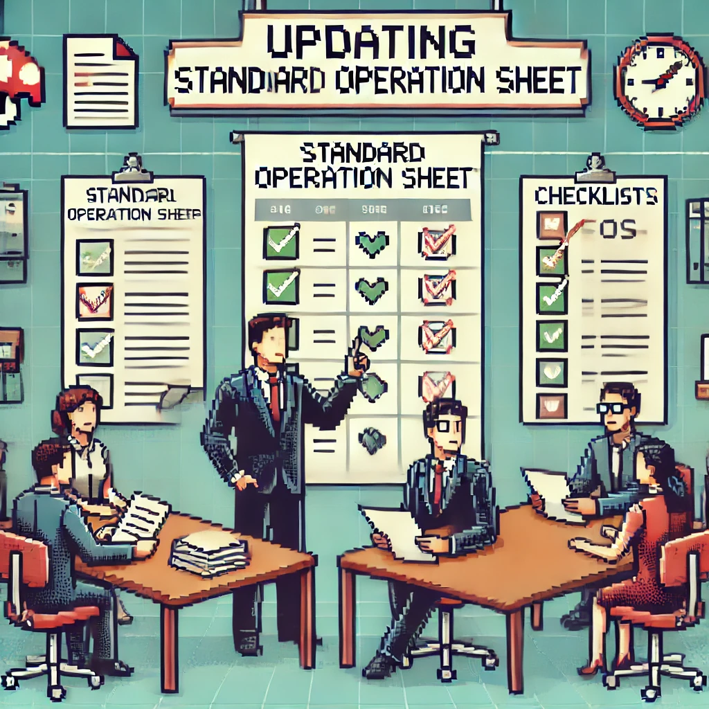
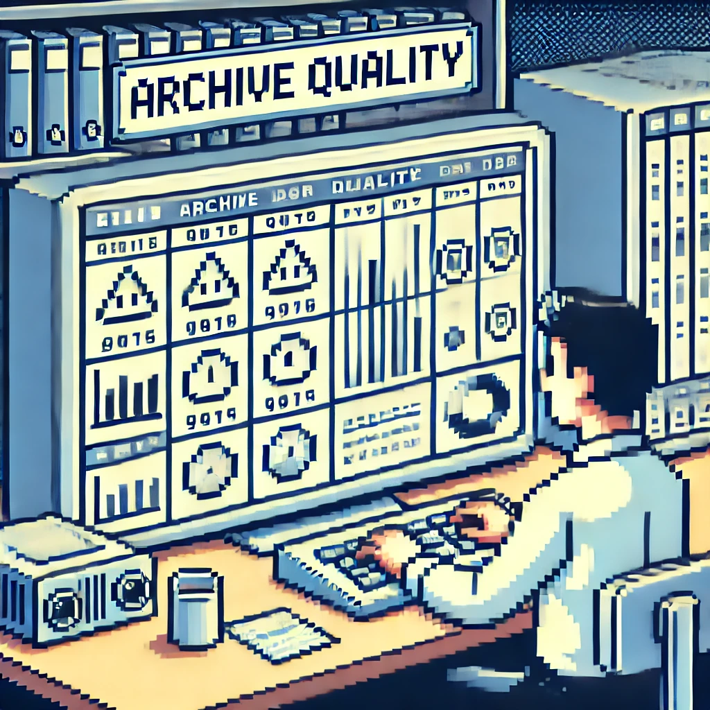
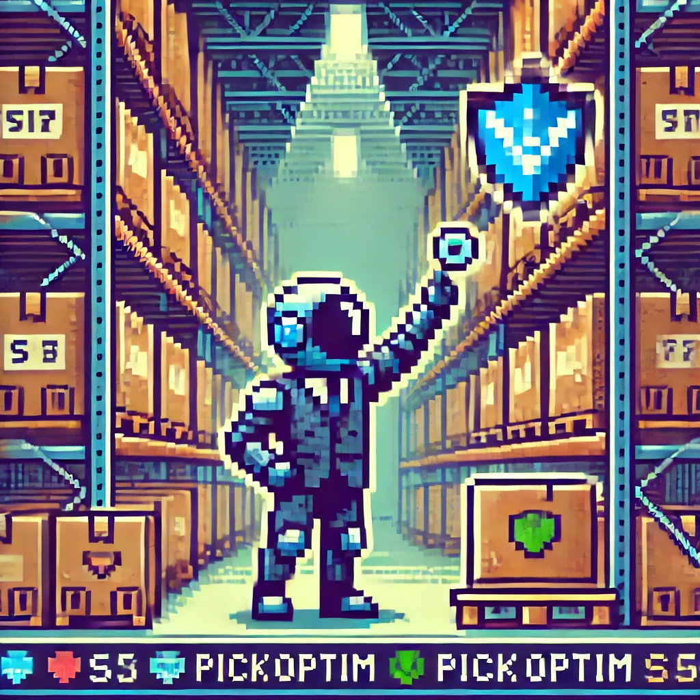

Mes Réalisations Professionnelles
🔧 Automatisation
Optimiser les tâches répétitives, fiabiliser les process, et gagner du temps.
💡 Dans ces projets, j'ai mis l'accent sur la création d'outils automatisés, adaptés aux besoins terrains, pour améliorer le flux de travail.
⚙️ Performance
Améliorer les méthodes, la qualité des données et les résultats opérationnels.
💡 Ces projets m'ont permis d'agir sur la performance directe des opérations en fiabilisant les données et les process décisionnels.
💡 Innovation
Répondre à des besoins nouveaux, créer des outils à forte valeur stratégique.

Développement d'un module supplémentaire sur le fichier des requêtes

Développement d'une macro Excel pour l'implantation IMS

Outil dynamique de désélection pour la préparation d'audit

Modélisation des alvéoles du site pour le projet Locoptim

Amélioration du processus des picking "Bon Complet"

Optimisation de la qualité des archives des inventaires

Création d'un portail des méthodes

Analyse d'un KPI défaillant

Rapport sur les implantations futures
